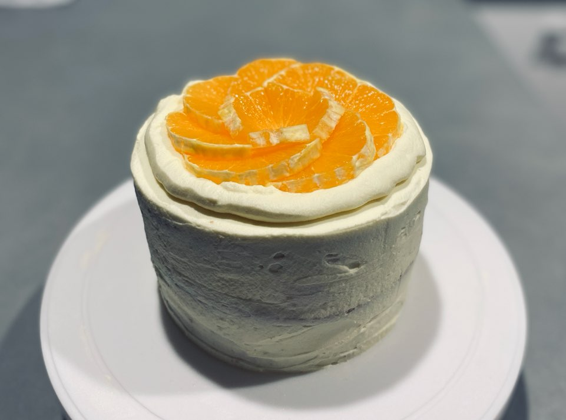

솔이의 취향대로 만드는 오렌지케익!
레시피
재료
- 15cm 스펀지 케이크 시트 3장
- (레시피 영상 : https://youtu.be/y4sFW7PvUQY)
- 오렌지 5개 정도
- 설탕시럽
- 휘핑한 생크림 400g (+설탕 40g)
- 오렌지색 생크림 40g (+설탕 4g, 주황 식용색소)
- 애플민트
순서
- 1. 오렌지의 껍질을 까고 장식할 오렌지와 샌드할 오렌지로 나누어 썬다.
- 2. 돌림판에 시트를 올리고 설탕시럽을 뿌린 뒤 휘핑한 크림을 바른다.
- 3. 오렌지를 올리고 생크림을 바른 뒤 시트를 올린다. 1번 더 반복한다.
- 4. 마지막 시트를 올리고 생크림을 전체적으로 바른다.
- 5. 오렌지색 생크림을 군데군데 묻힌 후 스크래퍼를 이용해 아이싱 한다.
- 6. 케이크 윗면에 생크림을 동그랗게 짜고 오렌지와 애플민트를 올려 장식한다.
